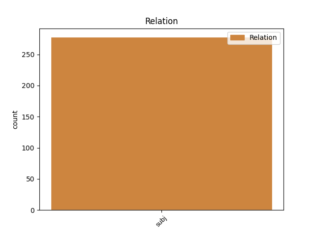
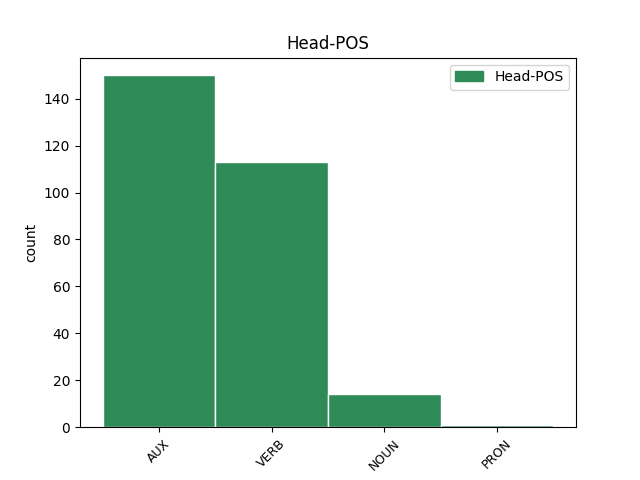
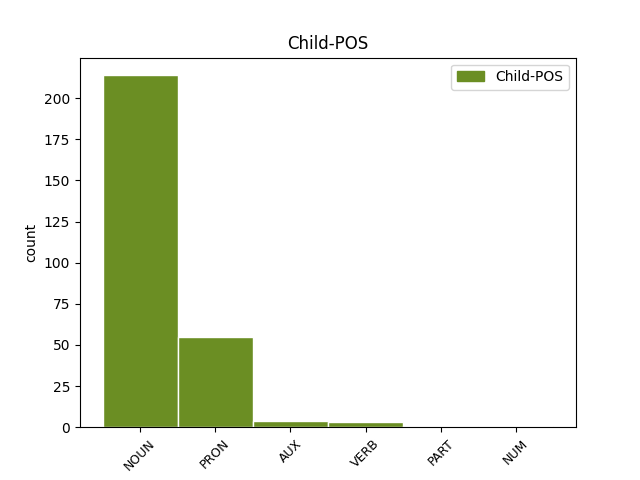

Distribution of features within this leaf



Agreement Rules sorted by frequency.
- When the dependent token is the subject(subj) of the head token, and the head token is AUX and the dependent token is NOUN.
1 அந்தக் _ _ _ _ 0 _ _ _
2 கட்டடங்களில் _ _ _ _ 0 _ _ _
3 ஏய் _ _ _ _ 0 _ _ _
4 இருந்து _ _ _ _ 0 _ _ _
5 பணியாற்றுகிற _ _ _ _ 0 _ _ _
6 மருத்துவர்கள் _ _ _ _ 0 _ _ _
7 , _ _ _ _ 0 _ _ _
8 அந்த _ _ _ _ 0 _ _ _
9 மருத்துவர்களுக்கு _ _ _ _ 0 _ _ _
10 உதவியாக _ _ _ _ 0 _ _ _
11 இருக்கிற _ _ _ _ 0 _ _ _
12 செவிலியர்கள் _ _ _ _ 0 _ _ _
13 உள்ளிட்ட _ _ _ _ 0 _ _ _
14 மற்ற _ _ _ _ 0 _ _ _
15 மருத்துவத்துறை _ _ _ _ 0 _ _ _
16 நண்பர்கள் _ _ _ _ 0 _ _ _
17 அனைவரும் _ _ _ _ 0 _ _ _
18 ஏத் _ _ _ _ 0 _ _ _
19 ஓ _ _ _ _ 0 _ _ _
20 ஒரு _ _ _ _ 0 _ _ _
21 கடமை _ _ _ _ 0 _ _ _
22 ஆற்றுகிறோம் _ _ _ _ 0 _ _ _
23 என்று _ _ _ _ 0 _ _ _
24 இல்லாமல் _ _ _ _ 0 _ _ _
25 இந்தப் _ _ _ _ 0 _ _ _
26 பணி பணி NOUN NNN-3SN-- Case=Nom|Gender=Neut|Number=Sing|Person=3 30 subj _ LTranslit=paṇi|Translit=paṇi
27 நம்மை _ _ _ _ 0 _ _ _
28 வந்து _ _ _ _ 0 _ _ _
29 அடைந்த் _ _ _ _ 0 _ _ _
30 இருக்கிறது இரு AUX VR-P3SNAA Gender=Neut|Mood=Ind|Number=Sing|Person=3|Polarity=Pos|Tense=Pres|VerbForm=Fin|Voice=Act 0 _ _ _
31 . _ _ _ _ 0 _ _ _
1 தமிழ்நாடு _ _ _ _ 0 _ _ _
2 அரசு அரசு NOUN NNN-3SN-- Case=Nom|Gender=Neut|Number=Sing|Person=3 5 subj _ LTranslit=aracu|Translit=aracu
3 தான் _ _ _ _ 0 _ _ _
4 அதைச் _ _ _ _ 0 _ _ _
5 செய்தது செய் VERB Vr-D3SNAA Gender=Neut|Mood=Ind|Number=Sing|Person=3|Polarity=Pos|Tense=Past|VerbForm=Fin|Voice=Act 0 _ _ _
6 . _ _ _ _ 0 _ _ _
1 அந்தப் _ _ _ _ 0 _ _ _
2 பணியை _ _ _ _ 0 _ _ _
3 மனித _ _ _ _ 0 _ _ _
4 நேய _ _ _ _ 0 _ _ _
5 மனப்பான்மையோடு _ _ _ _ 0 _ _ _
6 நாம் நாம் PRON RpN-1PA-- Animacy=Anim|Case=Nom|Gender=Com|Number=Plur|Person=1|PronType=Prs 7 subj _ LTranslit=nām|Translit=nām
7 நிறைவேற்றுவோம் நிறைவேற்று VERB Vr-F1P-AA Mood=Ind|Number=Plur|Person=1|Polarity=Pos|Tense=Fut|VerbForm=Fin|Voice=Act 0 _ _ _
8 என்ற _ _ _ _ 0 _ _ _
9 அந்த _ _ _ _ 0 _ _ _
10 உணர்வைப் _ _ _ _ 0 _ _ _
11 பெற்று _ _ _ _ 0 _ _ _
12 மக்களைக் _ _ _ _ 0 _ _ _
13 காப்பாற்ற _ _ _ _ 0 _ _ _
14 வேண்டும் _ _ _ _ 0 _ _ _
15 - _ _ _ _ 0 _ _ _
16 மக்களுக்குப் _ _ _ _ 0 _ _ _
17 பணியாற்ற _ _ _ _ 0 _ _ _
18 வேண்டும் _ _ _ _ 0 _ _ _
19 . _ _ _ _ 0 _ _ _
1 முதலில் _ _ _ _ 0 _ _ _
2 அது அது PRON RpN-3SN-- Case=Nom|Gender=Neut|Number=Sing|Person=3|PronType=Prs 6 subj _ LTranslit=atu|Translit=atu
3 25 _ _ _ _ 0 _ _ _
4 லட்சமாக _ _ _ _ 0 _ _ _
5 ஒதுக்கப் _ _ _ _ 0 _ _ _
6 பட்டது படு AUX VR-D3SNPA Gender=Neut|Mood=Ind|Number=Sing|Person=3|Polarity=Pos|Tense=Past|VerbForm=Fin|Voice=Pass 0 _ _ _
7 . _ _ _ _ 0 _ _ _
1 இதுகுறித்து _ _ _ _ 0 _ _ _
2 அவர் அவர் PRON RpN-3SH-- Case=Nom|Gender=Com|Number=Sing|Person=3|Polite=Form|PronType=Prs 3 subj _ LTranslit=avar|Translit=avar
3 கூறுகையில் கூறு NOUN NNL-3SN-- Case=Loc|Gender=Neut|Number=Sing|Person=3 0 _ _ _
4 , _ _ _ _ 0 _ _ _
5 எனது _ _ _ _ 0 _ _ _
6 பேச்ச் _ _ _ _ 0 _ _ _
7 உம் _ _ _ _ 0 _ _ _
8 , _ _ _ _ 0 _ _ _
9 கருத்த் _ _ _ _ 0 _ _ _
10 உம் _ _ _ _ 0 _ _ _
11 இந்தளவுக்கு _ _ _ _ 0 _ _ _
12 சர்ச்சையை _ _ _ _ 0 _ _ _
13 ஏற்படுத்தும் _ _ _ _ 0 _ _ _
14 என்று _ _ _ _ 0 _ _ _
15 நான் _ _ _ _ 0 _ _ _
16 எதிர்பார்க்கவ் _ _ _ _ 0 _ _ _
17 இல்லை _ _ _ _ 0 _ _ _
18 . _ _ _ _ 0 _ _ _
1 ஐக்கிய _ _ _ _ 0 _ _ _
2 நாடுகள் _ _ _ _ 0 _ _ _
3 சபையின் _ _ _ _ 0 _ _ _
4 பாதுகாப்புக் _ _ _ _ 0 _ _ _
5 கவுன்சிலில் _ _ _ _ 0 _ _ _
6 இந்தியாவுக்கு _ _ _ _ 0 _ _ _
7 உறுப்பினர் _ _ _ _ 0 _ _ _
8 அந்தஸ்து _ _ _ _ 0 _ _ _
9 கிடைப்பது கிடை AUX VZNF3SNAA Case=Nom|Gender=Neut|Number=Sing|Person=3|Polarity=Pos|Tense=Fut|VerbForm=Ger|Voice=Act 11 subj _ LTranslit=kiṭai|Translit=kiṭaippatu
10 உறுதியாகி _ _ _ _ 0 _ _ _
11 விட்டது விடு AUX VR-D3SNAA Gender=Neut|Mood=Ind|Number=Sing|Person=3|Polarity=Pos|Tense=Past|VerbForm=Fin|Voice=Act 0 _ _ _
12 . _ _ _ _ 0 _ _ _
1 குரல் _ _ _ _ 0 _ _ _
2 வாக்கெடுப்பு _ _ _ _ 0 _ _ _
3 மூலம் _ _ _ _ 0 _ _ _
4 ஒரு _ _ _ _ 0 _ _ _
5 வாக்கு _ _ _ _ 0 _ _ _
6 கூடுதலாக _ _ _ _ 0 _ _ _
7 பெற்று _ _ _ _ 0 _ _ _
8 எடியூரப்பா _ _ _ _ 0 _ _ _
9 அரசு _ _ _ _ 0 _ _ _
10 வெற்றி _ _ _ _ 0 _ _ _
11 பெற்றுவிட்டத் _ _ _ _ 0 _ _ _
12 ஆக _ _ _ _ 0 _ _ _
13 அறிவித்தது அறிவி VERB VzND3SNAA Case=Nom|Gender=Neut|Number=Sing|Person=3|Polarity=Pos|Tense=Past|VerbForm=Ger|Voice=Act 17 subj _ LTranslit=arivi|Translit=arivittatu
14 சட்ட _ _ _ _ 0 _ _ _
15 விரோதம் _ _ _ _ 0 _ _ _
16 ஆன _ _ _ _ 0 _ _ _
17 செயல் செயல் NOUN NNN-3SN-- Case=Nom|Gender=Neut|Number=Sing|Person=3 0 _ _ _
18 . _ _ _ _ 0 _ _ _
1 ஆப்கானிஸ்தானில் _ _ _ _ 0 _ _ _
2 தீவிரவாதிகளின் _ _ _ _ 0 _ _ _
3 செயல்களால் _ _ _ _ 0 _ _ _
4 பொதுமக்கள் பொதுமக்கள் NOUN NNN-3PA-- Animacy=Anim|Case=Nom|Gender=Com|Number=Plur|Person=3 6 subj _ LTranslit=potumakkaḷ|Translit=potumakkaḷ
5 10 _ _ _ _ 0 _ _ _
6 பேர் பேர் NOUN NNN-3PA-- Animacy=Anim|Case=Nom|Gender=Com|Number=Plur|Person=3 0 _ _ _
7 உயிரிழந்தனர் _ _ _ _ 0 _ _ _
8 . _ _ _ _ 0 _ _ _
1 ஜார்க்கண்டின் _ _ _ _ 0 _ _ _
2 தும்கா _ _ _ _ 0 _ _ _
3 மாவட்டத்தில் _ _ _ _ 0 _ _ _
4 மாவோயிஸ்டுகள் _ _ _ _ 0 _ _ _
5 உடன் _ _ _ _ 0 _ _ _
6 நிகழ்ந்த _ _ _ _ 0 _ _ _
7 கடும் _ _ _ _ 0 _ _ _
8 துப்பாக்கிச்சண்டையில் _ _ _ _ 0 _ _ _
9 போலீஸ் _ _ _ _ 0 _ _ _
10 அதிகாரி _ _ _ _ 0 _ _ _
11 ஒருவர் ஒருவர் NUM UxN-3SH-- Case=Nom|Gender=Com|Number=Sing|NumType=Card|Person=3|Polite=Form 12 subj _ LTranslit=oruvar|Translit=oruvar
12 உயிரிழந்தார் உயிரிழ VERB Vr-D3SHAA Gender=Com|Mood=Ind|Number=Sing|Person=3|Polarity=Pos|Polite=Form|Tense=Past|VerbForm=Fin|Voice=Act 0 _ _ _
13 . _ _ _ _ 0 _ _ _
1 இவர் _ _ _ _ 0 _ _ _
2 ஏற்கெனவே _ _ _ _ 0 _ _ _
3 , _ _ _ _ 0 _ _ _
4 உள்துறை _ _ _ _ 0 _ _ _
5 அமைச்சர் _ _ _ _ 0 _ _ _
6 சிதம்பரத்தின் _ _ _ _ 0 _ _ _
7 மாவோயிஸ்ட் _ _ _ _ 0 _ _ _
8 எதிர்ப்புக் _ _ _ _ 0 _ _ _
9 கொள்கைகள் _ _ _ _ 0 _ _ _
10 குறித்து _ _ _ _ 0 _ _ _
11 விமர்சித்த் _ _ _ _ 0 _ _ _
12 இருந்தார் _ _ _ _ 0 _ _ _
13 என்பது என் PART TzNF3SN-A Case=Nom|Gender=Neut|Number=Sing|Person=3|Polarity=Pos|Tense=Fut|VerbForm=Ger 15 subj _ LTranslit=en|Translit=enpatu
14 குறிப்பிடத் _ _ _ _ 0 _ _ _
15 தக்கது தகு VERB Vr-D3SNAA Gender=Neut|Mood=Ind|Number=Sing|Person=3|Polarity=Pos|Tense=Past|VerbForm=Fin|Voice=Act 0 _ _ _
16 . _ _ _ _ 0 _ _ _
1 ஈழத் _ _ _ _ 0 _ _ _
2 தமிழர்களை _ _ _ _ 0 _ _ _
3 ஈவிரக்கம் _ _ _ _ 0 _ _ _
4 இன்றி _ _ _ _ 0 _ _ _
5 லட்சக் _ _ _ _ 0 _ _ _
6 கணக்கில் _ _ _ _ 0 _ _ _
7 கொன்றுகு _ _ _ _ 0 _ _ _
8 வித்த _ _ _ _ 0 _ _ _
9 ராஜபட்சவை _ _ _ _ 0 _ _ _
10 தில்லிக்கு _ _ _ _ 0 _ _ _
11 அழைத்துச் _ _ _ _ 0 _ _ _
12 சிறப்பிக்க _ _ _ _ 0 _ _ _
13 விரும்பும் _ _ _ _ 0 _ _ _
14 மத்திய _ _ _ _ 0 _ _ _
15 அரசின் _ _ _ _ 0 _ _ _
16 அணுகுமுறைய் _ _ _ _ 0 _ _ _
17 ஆனது ஆனது VERB VzND3SNAA Case=Nom|Gender=Neut|Number=Sing|Person=3|Polarity=Pos|Tense=Past|VerbForm=Ger|Voice=Act 25 subj _ LTranslit=ānatu|Translit=ānatu
18 சுமார் _ _ _ _ 0 _ _ _
19 10 _ _ _ _ 0 _ _ _
20 கோடிக்க் _ _ _ _ 0 _ _ _
21 உம் _ _ _ _ 0 _ _ _
22 மேலான _ _ _ _ 0 _ _ _
23 ஒட்டுமொத்தத் _ _ _ _ 0 _ _ _
24 தமிழினத்தையும் _ _ _ _ 0 _ _ _
25 கேவலப்படுத்துவத் கேவலப்படுத்து VERB VzNF3SNAA Case=Nom|Gender=Neut|Number=Sing|Person=3|Polarity=Pos|Tense=Fut|VerbForm=Ger|Voice=Act 0 _ _ _
26 ஆக _ _ _ _ 0 _ _ _
27 அமைந்த் _ _ _ _ 0 _ _ _
28 உள்ளது _ _ _ _ 0 _ _ _
29 . _ _ _ _ 0 _ _ _
1 ராஜபட்சவ் _ _ _ _ 0 _ _ _
2 உம் _ _ _ _ 0 _ _ _
3 சிங்கள _ _ _ _ 0 _ _ _
4 அரச் _ _ _ _ 0 _ _ _
5 உம் _ _ _ _ 0 _ _ _
6 போர் _ _ _ _ 0 _ _ _
7 மரபுகளை _ _ _ _ 0 _ _ _
8 மீறி _ _ _ _ 0 _ _ _
9 மனிதநேயம் _ _ _ _ 0 _ _ _
10 அற்ற _ _ _ _ 0 _ _ _
11 முறையில் _ _ _ _ 0 _ _ _
12 போர்க் _ _ _ _ 0 _ _ _
13 குற்றம் _ _ _ _ 0 _ _ _
14 இழைத்த் _ _ _ _ 0 _ _ _
15 உள்ளனர் _ _ _ _ 0 _ _ _
16 என்று _ _ _ _ 0 _ _ _
17 ஜனநாயகத்தின் _ _ _ _ 0 _ _ _
18 மீது _ _ _ _ 0 _ _ _
19 நம்பிக்கை _ _ _ _ 0 _ _ _
20 உள்ள _ _ _ _ 0 _ _ _
21 சர்வதேச _ _ _ _ 0 _ _ _
22 நாடுகள் _ _ _ _ 0 _ _ _
23 கண்டித்து _ _ _ _ 0 _ _ _
24 வருகிற _ _ _ _ 0 _ _ _
25 நிலையில் _ _ _ _ 0 _ _ _
26 , _ _ _ _ 0 _ _ _
27 மத்திய _ _ _ _ 0 _ _ _
28 அரசு _ _ _ _ 0 _ _ _
29 அதற்கு _ _ _ _ 0 _ _ _
30 நேர்மாறாக _ _ _ _ 0 _ _ _
31 ஒரு _ _ _ _ 0 _ _ _
32 போர்க் _ _ _ _ 0 _ _ _
33 குற்றவாளிக்கு _ _ _ _ 0 _ _ _
34 சிவப்புக் _ _ _ _ 0 _ _ _
35 கம்பளம் _ _ _ _ 0 _ _ _
36 விரிப்பது விரி AUX VzNF3SNAA Case=Nom|Gender=Neut|Number=Sing|Person=3|Polarity=Pos|Tense=Fut|VerbForm=Ger|Voice=Act 45 subj _ LTranslit=viri|Translit=virippatu
37 அத்தகைய _ _ _ _ 0 _ _ _
38 போர்க் _ _ _ _ 0 _ _ _
39 குற்றத்தில் _ _ _ _ 0 _ _ _
40 மத்திய _ _ _ _ 0 _ _ _
41 அரசின் _ _ _ _ 0 _ _ _
42 பங்களிப்பு _ _ _ _ 0 _ _ _
43 எத்தகையது _ _ _ _ 0 _ _ _
44 என்பதை _ _ _ _ 0 _ _ _
45 உறுதிப்படுத்துவத் உறுதிப்படுத்து VERB VzNF3SNAA Case=Nom|Gender=Neut|Number=Sing|Person=3|Polarity=Pos|Tense=Fut|VerbForm=Ger|Voice=Act 0 _ _ _
46 ஆக _ _ _ _ 0 _ _ _
47 உள்ளது _ _ _ _ 0 _ _ _
48 . _ _ _ _ 0 _ _ _
Disagree Examples:
1 குடும்பத்தினர் _ _ _ _ 0 _ _ _
2 எண்ணிக்கை _ _ _ _ 0 _ _ _
3 பெருகி _ _ _ _ 0 _ _ _
4 இட _ _ _ _ 0 _ _ _
5 நெருக்கடி _ _ _ _ 0 _ _ _
6 ஏற்படும் _ _ _ _ 0 _ _ _
7 நிலையில் _ _ _ _ 0 _ _ _
8 தங்களின் _ _ _ _ 0 _ _ _
9 மூதாதையர்கள் _ _ _ _ 0 _ _ _
10 வாழ்ந்த _ _ _ _ 0 _ _ _
11 வீட்டை _ _ _ _ 0 _ _ _
12 விரிவாக்கம் _ _ _ _ 0 _ _ _
13 செய்யவ் _ _ _ _ 0 _ _ _
14 ஓ _ _ _ _ 0 _ _ _
15 , _ _ _ _ 0 _ _ _
16 கூடுதல் _ _ _ _ 0 _ _ _
17 அறைய் _ _ _ _ 0 _ _ _
18 ஓ _ _ _ _ 0 _ _ _
19 , _ _ _ _ 0 _ _ _
20 தாழ்வாரம் _ _ _ _ 0 _ _ _
21 ஓ _ _ _ _ 0 _ _ _
22 , _ _ _ _ 0 _ _ _
23 கழிப்பு _ _ _ _ 0 _ _ _
24 அறைய் _ _ _ _ 0 _ _ _
25 ஓ _ _ _ _ 0 _ _ _
26 கட்டினால் _ _ _ _ 0 _ _ _
27 கூட _ _ _ _ 0 _ _ _
28 இச் _ _ _ _ 0 _ _ _
29 சட்டத்தின் _ _ _ _ 0 _ _ _
30 படி _ _ _ _ 0 _ _ _
31 வீட்டின் _ _ _ _ 0 _ _ _
32 உரிமையாளர் உரிமையாளர் NOUN NNN-3SH-- Case=Nom|Gender=Com|Number=Sing|Person=3|Polite=Form 40 subj _ LTranslit=urimaiyāḷar|Translit=urimaiyāḷar
33 உம் _ _ _ _ 0 _ _ _
34 , _ _ _ _ 0 _ _ _
35 சம்பந்தப்பட்ட _ _ _ _ 0 _ _ _
36 அரசு _ _ _ _ 0 _ _ _
37 அதிகாரிகள் _ _ _ _ 0 _ _ _
38 உம் _ _ _ _ 0 _ _ _
39 தண்டிக்கப் _ _ _ _ 0 _ _ _
40 படுவார்கள் படு AUX VR-F3PHPA Gender=Com|Mood=Ind|Number=Plur|Person=3|Polarity=Pos|Polite=Form|Tense=Fut|VerbForm=Fin|Voice=Pass 0 _ _ _
41 . _ _ _ _ 0 _ _ _
1 இப் _ _ _ _ 0 _ _ _
2 பகுதிகளில் _ _ _ _ 0 _ _ _
3 புதிதாக _ _ _ _ 0 _ _ _
4 மின் _ _ _ _ 0 _ _ _
5 இணைப்புகள் இணைப்பு NOUN NNN-3PN-- Case=Nom|Gender=Neut|Number=Plur|Person=3 9 subj _ LTranslit=iṇaippu|Translit=iṇaippukaḷ
6 இனி _ _ _ _ 0 _ _ _
7 வழங்கப் _ _ _ _ 0 _ _ _
8 பட _ _ _ _ 0 _ _ _
9 மாட்டாது மாட்டு AUX VR-T3SN-N Gender=Neut|Mood=Ind|Number=Sing|Person=3|Polarity=Neg|VerbForm=Fin 0 _ _ _
10 . _ _ _ _ 0 _ _ _
1 மீன்பிடி _ _ _ _ 0 _ _ _
2 ஒழுங்குமுறைச் _ _ _ _ 0 _ _ _
3 சட்டத்தை _ _ _ _ 0 _ _ _
4 எதிர்த்து _ _ _ _ 0 _ _ _
5 , _ _ _ _ 0 _ _ _
6 மீனவ _ _ _ _ 0 _ _ _
7 மக்கள் _ _ _ _ 0 _ _ _
8 கிளர்ந்து _ _ _ _ 0 _ _ _
9 எழுந்து _ _ _ _ 0 _ _ _
10 போராடியதைப் _ _ _ _ 0 _ _ _
11 போல _ _ _ _ 0 _ _ _
12 , _ _ _ _ 0 _ _ _
13 தொல்பொருள் _ _ _ _ 0 _ _ _
14 ஆய்வுத்துறை _ _ _ _ 0 _ _ _
15 கொண்டு _ _ _ _ 0 _ _ _
16 வந்து _ _ _ _ 0 _ _ _
17 உள்ள _ _ _ _ 0 _ _ _
18 சட்டத்தைய் _ _ _ _ 0 _ _ _
19 உம் _ _ _ _ 0 _ _ _
20 எதிர்த்து _ _ _ _ 0 _ _ _
21 மக்கள் மக்கள் NOUN NNN-3PA-- Animacy=Anim|Case=Nom|Gender=Com|Number=Plur|Person=3 23 subj _ LTranslit=makkaḷ|Translit=makkaḷ
22 போராட _ _ _ _ 0 _ _ _
23 வேண்டும் வேண்டு AUX VR-F3SNAA Gender=Neut|Mood=Ind|Number=Sing|Person=3|Polarity=Pos|Tense=Fut|VerbForm=Fin|Voice=Act 0 _ _ _
24 . _ _ _ _ 0 _ _ _
1 இத் _ _ _ _ 0 _ _ _
2 ஏ _ _ _ _ 0 _ _ _
3 சர்வேயில் _ _ _ _ 0 _ _ _
4 , _ _ _ _ 0 _ _ _
5 ’ _ _ _ _ 0 _ _ _
6 அதிகம் _ _ _ _ 0 _ _ _
7 நேசிக்கப் _ _ _ _ 0 _ _ _
8 படும் _ _ _ _ 0 _ _ _
9 உலகத் _ _ _ _ 0 _ _ _
10 தலைவர்கள் தலைவர் NOUN NNN-3PA-- Animacy=Anim|Case=Nom|Gender=Com|Number=Plur|Person=3 11 subj _ LTranslit=talaivar|Translit=talaivarkaḷ
11 யார் யார் PRON RiN-3SA-- Animacy=Anim|Case=Nom|Gender=Com|Number=Sing|Person=3|PronType=Int 0 _ _ _
12 ? _ _ _ _ 0 _ _ _
13 ’ _ _ _ _ 0 _ _ _
14 என்ற _ _ _ _ 0 _ _ _
15 கருத்துக் _ _ _ _ 0 _ _ _
16 கணிப்பில் _ _ _ _ 0 _ _ _
17 , _ _ _ _ 0 _ _ _
18 இந்தியப் _ _ _ _ 0 _ _ _
19 பிரதமர் _ _ _ _ 0 _ _ _
20 மன்மோகன் _ _ _ _ 0 _ _ _
21 சிங் _ _ _ _ 0 _ _ _
22 முதலிடம் _ _ _ _ 0 _ _ _
23 பிடித்தார் _ _ _ _ 0 _ _ _
24 என்பது _ _ _ _ 0 _ _ _
25 குறிப்பிடத் _ _ _ _ 0 _ _ _
26 தக்கது _ _ _ _ 0 _ _ _
27 . _ _ _ _ 0 _ _ _
1 இதை _ _ _ _ 0 _ _ _
2 அரசு அரசு NOUN NNN-3SN-- Case=Nom|Gender=Neut|Number=Sing|Person=3 4 subj _ LTranslit=aracu|Translit=aracu
3 ஏற்கவ் _ _ _ _ 0 _ _ _
4 இல்லை இல் AUX VR-T3PNAA Gender=Neut|Mood=Ind|Number=Plur|Person=3|Polarity=Pos|VerbForm=Fin|Voice=Act 0 _ _ _
5 . _ _ _ _ 0 _ _ _